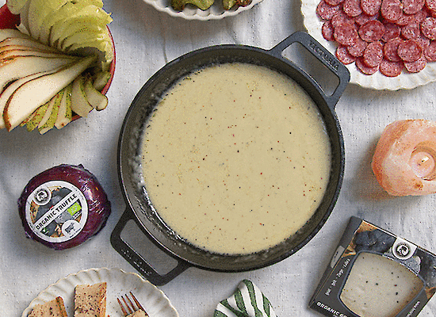

Truffle Fondue
Home

A cheesy heaven with additional Truffel taste. Best
enjoed with
fresh Bread.
Ingredients
- Fondue Cheese
- Black Truffle
- White Wine
- Garlic
- Cornstarch
- Nutmeg
Steps
- Crush a whole clove of garlic and add it to the caquelon.
- Add White Wine and the Cornstarch and mix well.
- Then add the cheese and stir until it has melted and flows smoothly from the ladle
- And now we season the fondue: nutmeg, regular pepper and a bit of salt
mix everything well and taste it with a piece of bread. Adjust the seasoning if needed.
- Finally we grate some black truffle into the fondue and can begin serving.